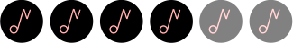
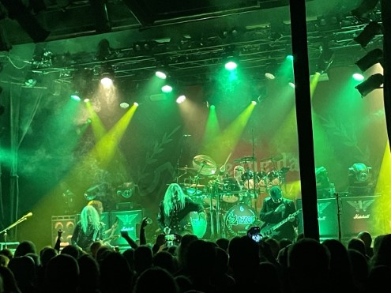

Saxon - Train 
Af Stefan Jespersgaard
Saxon, der er på turné med deres nye album Carpe Diem, havde lidt
problemer med at komme til Train i aftes. Tre timer før showet gik i
gang, for Saxon vild i et forsøg på at finde spillestedet.
De ankom dog til tiden og efter aftenens support band, Diamond Head,
meldte Saxon sin ankomst på scenen.
Med det nye album i bagagen spillede Saxon en god blanding af nyt
og gammelt. De store pleasere var dog de gamle klassikere
"Wheels of steel" og "Denim and leather".

Med Biff Byford i front, som fyldte 71 år tidligere i år, er Saxon stadig i fuld
gang. De gjorde det klart, at de ikke har i sinde at sænke farten og at de
samtidig ikke har tænkt sig at stoppe i den nærmeste fremtid.
Bandet har stået stærkt siden deres dannelse i 1976. Faktisk er Saxon en
del af "New Wave of British Heavy Metal" sammen med bands som Iron
Maiden og Def Leppard.
Ovenpå aftenens koncert kan det kun konkluderes at Saxon er klar til at
nå 50-års jubilæet. 4/6